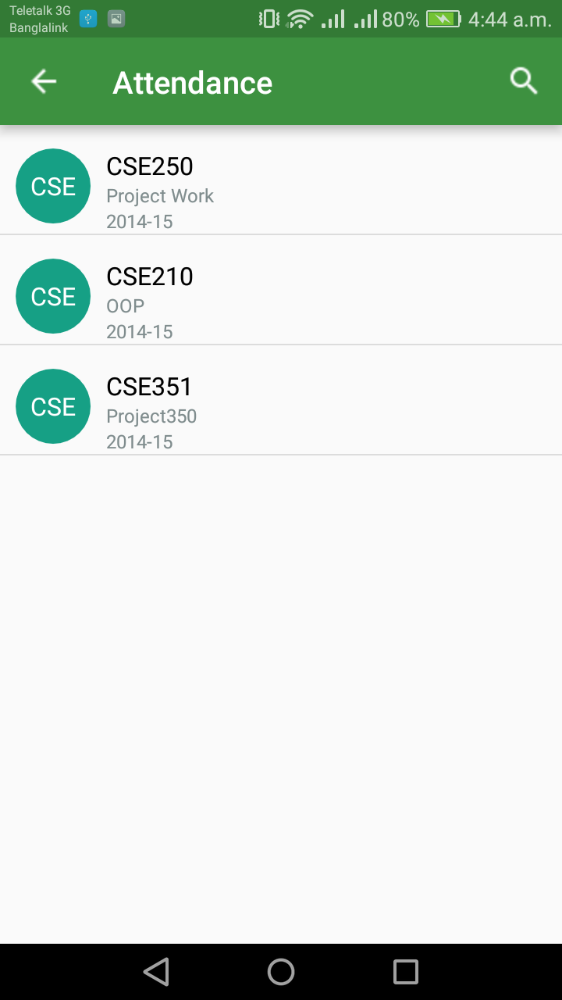
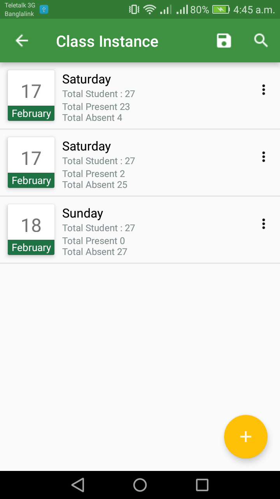
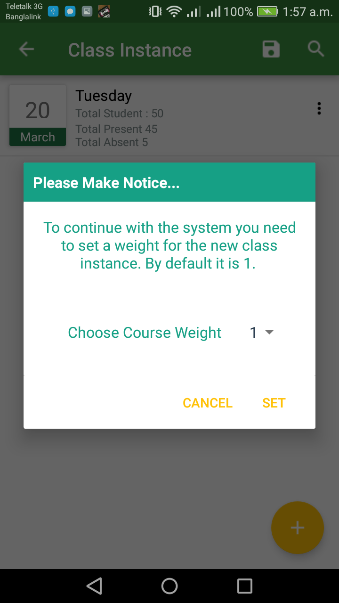
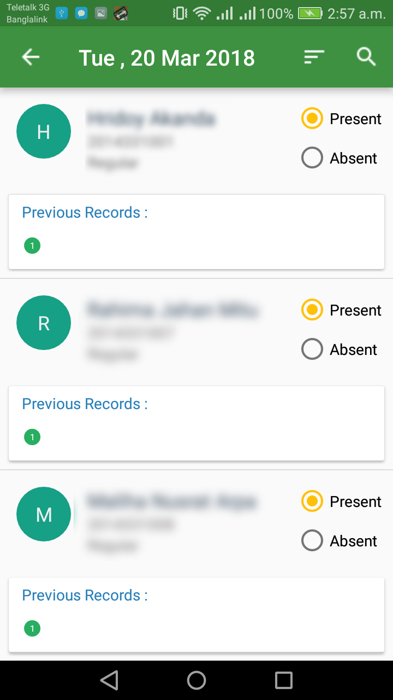

Once you setup your system with Courses and Students you can easily take attendance from this menu. The system provide you a more convenient way to take attendance in a Course Wise manner. All the Courses added by you in the Setup System menu will be listed in this menu screen. You just need to select your desired course to take attendance. The screen will look like the image aside.

Fig - Add Course Button
Now select a course from the course list. On selecting a course you will see a screen with all the "Class Instance" of the course. "Class Instance" represents a single class of the selected course. Every class instance has a "Weight". By default the weight is "1". You can set the weight upto "5" The value of the "Class Weight" will be treated as multiple class if it is set greater then "1". You can also add a class instance by pressing the "+" button in the screen aside.

Fig - Class Instance List
Once you press the "+" button you will see a Dialog Window which allow you to set your class weight. Just press the "Class Weight Value" (Here is 1) and you can choose it upto 5.
After setting the "Class Weight" press the "Set" button in the Dialog and you will see a new class instance is added to the list. By default the class instance is added with the Current Date. The Dialog window will look like the image aside

Fig - Class Instance Weight
You can also save all the class instance record as a CSV File/SpreadSheet by pressing the (Save) Icon.
After adding a class instance you will need to select a class instance from the list to take attendance For the selected course of selected class instance. Upon selecting a class instance you will see a screen with all the Students added in that course. From the list you just press the Present or Absent button to mark the student as Present or Absent. The image aside is representing the student list with present/absent option. Each Student row has also a list of Green/Red circle representing the last classes records. Here Green indicates Present and Red indicates absent. You can also search for specific student by pressing the (Search) icon. You can also sort the data by pressing the (Sort) icon

Fig - Student List
Once added you can easily change the class instance "Date and Weight" by pressing the More Option Icon. You can also delete the class instance from the More Option Icon. Once you choose to delete a class instance all the information related to that class instance like All Attendance Record will be permanently deleted and you will not be able to recover those data Delete Operation may sometimes cause you to loose your important data. Be careful while performing a delete operation.